Scrapy抓取动态网页
动态网页指几种可能：
1）需要用户交互，如常见的登录操作；
2）网页通过JS/ AJAX动态生成，如一个html里有<div id="test"></div>，通过JS生成<div id="test"><span>aaa</span></div>；
3）点击输入关键字后进行查询，而浏览器url地址不变
本篇文章不借助任何外部工具，实例操作如何以观察网络通信的方法解析动态网页。
环境：Win10 , python2.7，scrapy 1.4.0，Chrome浏览器，Firefox浏览器
1、观察是否为动态网页
以华盛顿邮报为例，搜索关键词 French ，搜索到的结果如下：

F12打开控制台，在Element下找到想要获得的搜索列表数据所在的section标签”main-content”
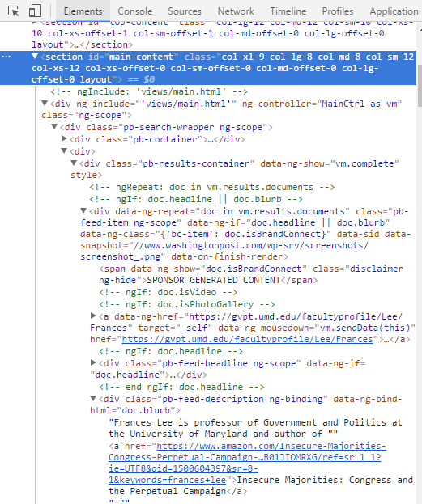
然后转到Network的Doc标签，重新加载当前网页，在Name下点击第一个文件，在右边的Preview下寻找相应的section id 为 “main-content”的元素，发现没有数据：
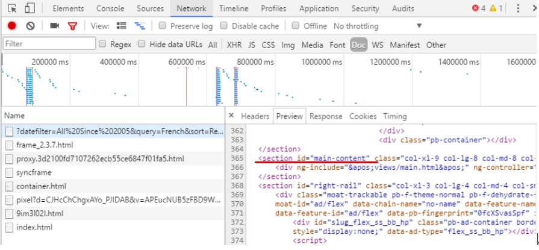
说明该内容为动态加载
2、获得JS点击动作发出的请求url
在JS标签下寻找真正存放数据的网页，点击Name下的文件观察右侧的Preview有没有数据，存放数据的网页才是我们真正需要爬取的网页：
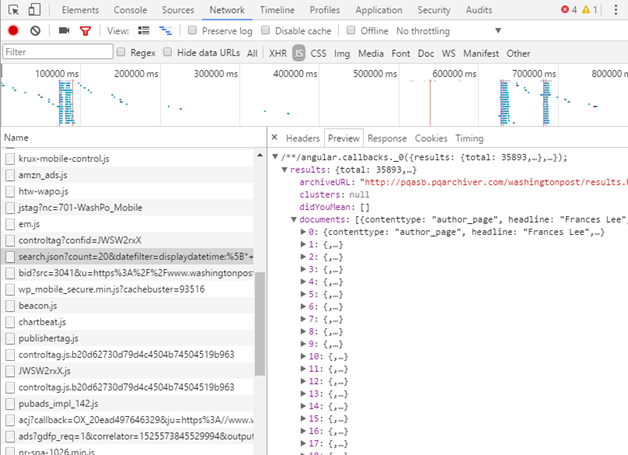
一个小技巧：一般动态加载的数据都以json形式存储，在Filter里填json过滤，可以更加快速地寻找到想要的文件，但不是所有的网站都适用，还是需要在JS或XHR里手动寻找所需文件。
复制当前文件的链接，得到一个很长的url：
在浏览器中打开这个地址，发现这是一个json文件，但是该url太过冗长，我们可以根据需要适当地删减一些参数，这些参数可以在Headers下得到：
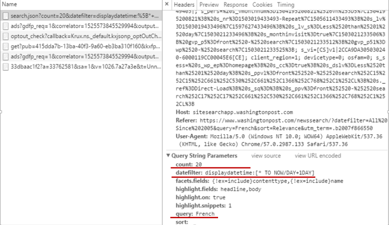
选择保留count,datefilter,query三个参数，注意，必须保证删减参数后的网页与原url获得的json数据一样，精简后的url为：
在火狐浏览器中打开该url（选择火狐浏览器打开是因为json数据显示友好），获得的页面如下：
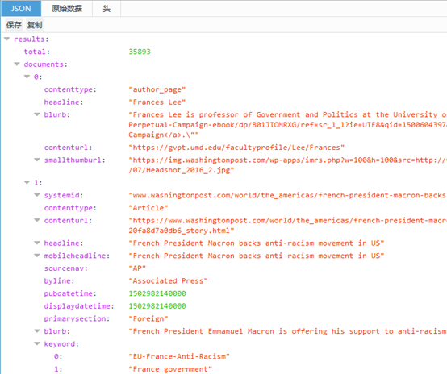
3、提取json数据
根据以上json文件的结构，我们可以用json.loads函数进一步提取想要的数据：
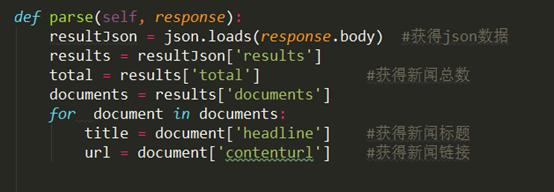
4、翻页机制
在网页上进行操作，观察url的参数变化规律：
第一页：
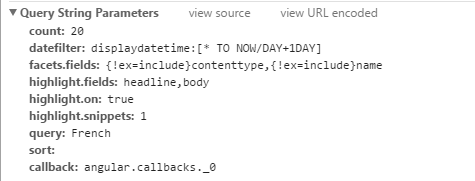
第二页：
第三页：
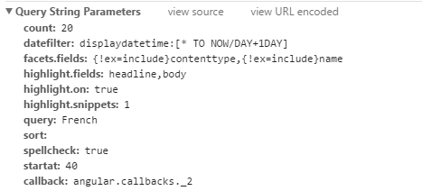
发现每一页的url变化都是由多出来的startat这个参数导致的，解析下一页只需要每次让startat的值增加20，在url后添加该参数即可，如第二页：
最后根据新闻总数来计算出最后一页的startat值即可
5、解析以表单形式提交参数的动态网页
有的网站输入关键字后进行查询，而浏览器url地址不变，有可能是以表单形式提交Request参数。
以苹果日报为例，关键字搜索“法��”，url中却没有类似“?q=法��”的参数
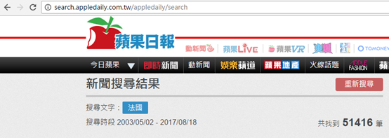
再次加载该url，发现其定位在一个单独的搜索页面：
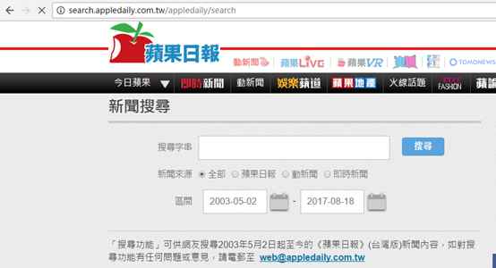
分析搜索的结果，发现该参数是以表单的方式提交的：
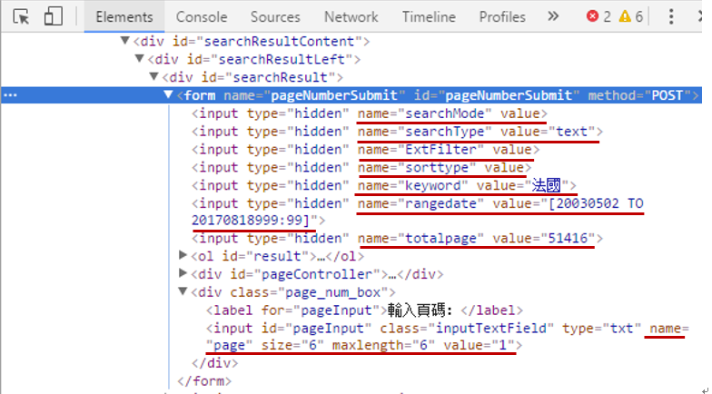
根据input 的参数填充FormRequest：
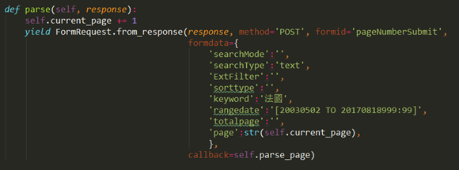
返回的response就可以用xpath正常解析网页了：
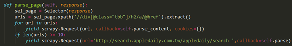
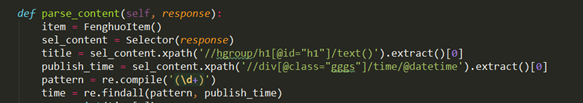